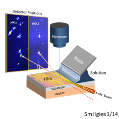

Research Interests
Detlef-M. Smilgies
|
An exciting interdisciplinary field inbetween Materials Science, Chemistry, and Physics with applications ranging into Biology and Medicine. "Smart Materials" form on their own by various types of self-organization processes, provided the right external conditions are chosen. |
|
|
Self-organization processes are an essential ingredient to form thin films and nanostructures. There are physical and chemical mechanisms that drive self-organization. Structure and dynamics of the self-organizing system provide detailed understanding of the actual process. The ultimate self-organized system is the living cell. |
|
|
|
A kind of molecular LEGO, inspired by building principles in biological objects. A mix of structural and functional components can build up anything from biosensors to solar cells - all you need is brains and a beaker. |
|
Understanding materials starts with determining their
molecular structure.
As a staff scientist at a synchrotron lab I have access to all the
photons
it takes. The study of interfaces and thin films makes
grazing-incidence
scattering techniques mandatory. My basic tools are grazing-incidence
x-ray
diffraction (GID), reflectivity (XR), and grazing-incidence
small-angle scattering (GISAXS). |
|
|  |
Real-time In-situ Multiprobe Experiments Due to the straightforward scattering geometry and for providing simultaneous information about in-plane and out-of-plane structure of thin films, GISAXS is ideally suited for in-situ and real-time experiments. Of particular interest are solvent-vapor processing and coating of thin films. In addition sample environments can be equipped with a spectroscopic reflectometer for optical film thickness monitoring or VIS spectroscopy. |
 |
If you would like to know more about working at CHESS or may be interested to collaborate with me or would just like to have a chat on synchrotron x-ray experiments - please don't hesitate to contact me by e-mail. Some information and pretty pictures on ongoing projects can be found here. |